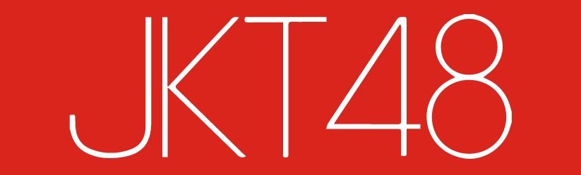
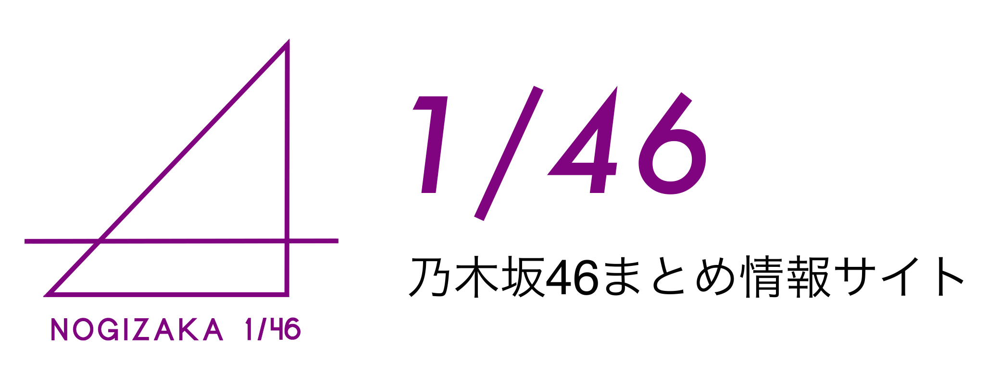

Selamat Datang
AKB48 Group atau grup saudari AKB48, disingkat 48 Group atau 48g, merujuk kepada sekumpulan grup saudari dari grup idola Jepang AKB48. Berbasis pada konsep yang sama "idola-idola yang dapat kau temui", grup tersebut saat ini terdiri dari 5 grup di Jepang dan 7 grup di luar negeri.
Namun pada saat ini sudah ada beberapa grup yang memisahkan diri dan dibubarkan seperti SNH 48 yang berpusat di Shanghai, Republik Rakyat Tiongkok.

JKT48 adalah grup idola asal Indonesia dan grup saudari AKB48 yang pertama di luar Jepang. Mengadopsi konsep AKB48, "idol you can meet", grup ini mengadakan pertunjukan rutin di JKT48 Theater yang terletak di fX Sudirman, Jakarta. Per 31 Oktober 2022, JKT48 memiliki 47 anggota.
Pembentukan JKT48 pertama kali diumumkan pada 11 September 2011 di sebuah acara AKB48 yang diadakan di Makuhari Messe di Chiba. Wawancara untuk peserta berlangsung pada akhir bulan September, dengan audisi final untuk finalis pada 8 Oktober 2011- 9 Oktober 2011.
Ada total 11 generasi sampai saat ini. Generasi pertama diperkenalkan pada tanggal 2 November 2011. dan diperkenalkan di situs web resmi JKT48 pada tanggal 3 November 2011. Di antara 28 anggota, ada satu anggota yang berasal dari Jepang yang bernama Rena Nozawa yang tinggal di Jakarta. Produser Yasushi Akimoto mengatakan JKT48 akan menjadi "jembatan persahabatan antara Indonesia dan Jepang".
JKT48 tampil untuk pertama kalinya di televisi pada konser program musik televisi 100% Ampuh, tayangan langsung Global TV dari Bekasi Square, 17 Desember 2011. Lagu yang pertama kali mereka bawakan adalah Heavy Rotation dengan lirik bahasa Indonesia. Kostum JKT48 serupa dengan seragam sekolah Jepang yang menjadi ciri khas AKB48. Pada hari berikutnya, 18 Desember 2011, JKT48 untuk pertama kalinya berinteraksi dengan penggemar lewat acara bersalaman Meet & Greet JKT48 di fX Center Jakarta, dan menyanyikan Heavy Rotation.
Dari tahun ke tahun, JKT48 telah menerjemahkan (melakukan covering) lebih dari 300 lagu dari grup-grup saudarinya dan mempunyai beberapa lagu original seperti Rapsodi dan yang paling baru ada Flying High yang dirilis pada 17 Juni 2022.
MNL48 adalah sebuah grup vokal perempuan idola Jepang yang berbasis di Manila, Filipina. Grup tersebut merupakan grup saudari keempat AKB48 di luar Jepang, setelah JKT48, SNH48, BNK48. Anggota generasi pertama diperkenalkan pada 28 April 2018.
Anggota generasi pertama diperkenalkan pada 28 April 2018. MNL48 juga akan mempunyai teater mereka sendiri yang berlokasi di lantai dasar Eton Centris Mall, Kota Quezon, Metro Manila.
Terdapat dua generasi dalam MNL dengan total 93 anggota dan tiga tim yaitu Tim MII, Tim NIV, dan Tim L.
BNK48 adalah sebuah grup vokal perempuan idola Thai yang berbasis di Bangkok, Thailand. Grup tersebut adalah grup saudari ketiga AKB48 di luar Jepang, setelah JKT48 dan SNH48. Warna grup adalah motif warna bunga Thailand populer "Anggrek"
Sebelum pengumuman resmi disebutkan tentang pembentukan kelompok terkait AKB48 di Bangkok. Yasushi Akimoto berbicara tentang grup yang dapat dilakukan di Bangkok pada 2012 mendatang di program televisi "Jam Masaru Morita Tertawa!" Pada 23 Desember 2011. Pada tahun 2012, dalam wawancara GQ JAPAN, mengacu pada pembentukan kelompok-kelompok terkait di kota-kota di luar Jepang setelah JKT48 yang dibentuk di Jakarta (Indonesia), di antaranya nama "BANGKOK 48" dikutip.
Audisi BNK48 pertama diadakan dari 29 Juli hingga 31 Agustus 2016, menarik total 1.357 pelamar, 330 di antaranya dipilih pada 5 September. Pemilihan awal anggota generasi pertama kemudian diadakan pada 17 dan 18 September 2016. Pada 23 September 2016, pemilihan diumumkan, menyatakan bahwa 80 kandidat akan lolos ke seleksi akhir. tetapi sejak Rama 9 (Paduka Yang Mulia Raja Bhumibol Adulyadej) meninggal dunia, penundaan akan diumumkan dua hari sebelum tanggal yang dijadwalkan untuk ujian akhir untuk berkabung Setelah selesai, semua aktivitas dihentikan sementara.
Pada 12 Februari 2017, generasi pertama dari grup ini secara resmi diumumkan, terdiri dari 29 anggota. Mereka membuat penampilan pertama mereka di acara AKB48 selama Festival Jepang ke-12 di Bangkok pada hari yang sama.
Anggota asli grup direkrut pada pertengahan 2016 dan diumumkan pada awal 2017, terdiri dari total 29 orang. Generasi kedua 27 anggota tambahan diumumkan pada 29 April 2018. Beberapa anggota telah meninggalkan grup dalam proses yang dikenal sebagai kelulusan. Hingga September 2018, kelompok ini terdiri dari 51 anggota, 22 di antaranya merupakan Tim BIII dan sisanya dikategorikan sebagai siswi pelatihan.
AKB48 adalah grup idola asal Jepang yang diproduseri oleh Yasushi Akimoto. Grup ini telah meraih popularitas yang tinggi di Jepang. Sepuluh singel terakhir mereka berhasil memuncaki tangga lagu mingguan Oricon.
Nama AKB48 diambil dari Akihabara, sebuah area di Tokyo. Pada lantai ke-8 toko Don Quijote yang berdiri di area tersebut, terletak teater milik grup ini. Ide Akimoto, yang kemudian diperkenalkan sebagai "idola yang dapat kamu temui", adalah membuat sebuah grup idola berbasis teater yang memungkinkan para penggemar bisa melihat mereka setiap hari. AKB48 masih tampil di teaternya setiap hari, namun karena permintaan yang sangat besar tiketnya sekarang hanya didistribusikan lewat sebuah undian.
AKB48 merupakan pemegang Guinness World Record sebagai "grup pop terbesar di dunia". Saat ini grup ini memiliki anggota sebanyak 187 gadis, yang terbagi menjadi 5 tim dan 1 tim project, project ini disponsori oleh paruh waktu perusahaan job "Baitoru": Tim A dengan 23 anggota (Kapten Tim A Yokoyama Yui), Tim K dengan 21 anggota (Kapten tim K Minami Minegishi), Tim B dengan 23 anggota(Kapten tim B Yuria Kizaki), Tim 4 dengan 23 anggota (Kapten tim 4 Juri Takahashi), Tim 8 Dengan 47 Anggota dan Baito AKB dengan 50 Anggota.
Pada tahun 2009 dikenalkan sebuah metode pemilihan yang dinamakan pemilihan umum (Senbatsu Sousenkyo) di mana para penggemar memberikan suara untuk memilih anggota-anggota yang akan berpartisipasi dalam rekaman singel AKB48 selanjutnya. Pada tahun 2010, muncul sebuah metode seleksi baru; para anggota saling berkompetisi satu sama lain dalam sebuah turnamen batu-kertas-gunting atau Janken Taikai untuk bisa berpartisipasi dalam singel. Grup tersebut juga secara berkala mengadakan acara jabat tangan (Akushukai), yang memberi kesempatan bagi para penggemar untuk berjabat tangan dengan anggota grup.
HKT48 adalah grup idola yang berbasis di Hakata, Fukuoka, Jepang. Grup idola ini dibentuk pada tahun 2011 oleh produser Yasushi Akimoto sebagai grup saudari ketiga dari AKB48.
Rencana pembentukan HKT48 diumumkan dalam acara bersalaman AKB48 yang diadakan 1 Mei 2011 di Makuhari Messe. Pendaftaran gelombang pertama dibuka dari 1 Mei hingga 31 Mei 2011. Audisi yang terdiri dari seleksi lamaran, wawancara, tari, dan nyanyi dilangsungkan di Fukuoka.
Audisi gelombang pertama 10 Juli 2011 meluluskan 24 orang. Mereka yang lulus sebagian besar berasal dari 5 prefektur di Kyushu dan Prefektur Yamaguchi. Usia rata-rata anggota 13,8 tahun, mulai dari murid kelas 5 sekolah dasar hingga murid kelas 2 sekolah menengah atas. Di antara proyek-proyek AKB48, HKT48 adalah grup dengan usia rata-rata anggota yang termuda.
Anggota angkatan pertama berjumlah 21 orang, diumumkan pada acara bersalaman AKB48 di Seibu Dome, Saitama, 23 Oktober 2011. HKT48 pertama kali tampil pertama kali pada 6 November 2011 dalam acara bersalaman AKB48 di Marine Messe Fukuoka.
HKT48 memulai pertunjukan teater "Te o Tsunaginagara" di Teater HKT48, 26 November 2011. Setlist ini merupakan daur ulang dari setlist berjudul sama yang pernah dipertunjukkan oleh Tim S SKE48.
HKT48 memiliki total 94 anggota asli selama 6 generasi dan total 106 anggota. Per 2022 Desember HKT48 mempunyai 33 anggota aktif dan 18 Kenkyuusei (trainee).

SKE48 adalah grup idola Jepang yang berbasis di Teater SKE48, Sunshine Sakae, Nagoya. Nama SKE48 berasal dari nama lokasi gedung pertunjukan mereka yang berada di Sakae. Grup ini dibentuk 30 Juli 2008 oleh Produser Yasushi Akimoto sebagai grup saudari pertama dari AKB48. Seperti halnya AKB48, konsep SKE48 adalah "idola yang dapat kamu temui".
Hingga Juli 2012, SKE sudah memiliki tiga tim: Tim S, Tim KII (dibaca: K Two), dan Tim E yang secara teratur melakukan pertunjukan di Teater SKE48 (Sunshine Studio).
SKE48 melakukan konser pertama di luar Jepang pada 26 April 2009 di Hong Kong. Konser pertama di luar Teater SKE48 dilangsungkan di Nagoya Bottom Line, 24 Mei 2009. Singel perdana "Tsuyoki Mono yo" yang dirilis 5 Agustus 2009 menempati urutan nomor dua singel harian Oricon (nomor 5 tangga mingguan Oricon). Tur konser besar pertama SKE48 digelar 3, 5, 17 Oktober 2010 di Tokyo, Nagoya, dan Kobe.
Empat belas anggota angkatan pertama dipilih dari 2.670 pelamar, angkatan kedua sejumlah 17 anggota dipilih dari 3.248 pelamar, dan angkatan ketiga sejumlah 11 anggota dipilih dari 2.396 pelamar. Anggota angkatan pertama diperkenalkan untuk pertama kalinya di konser AKB48 yang diadakan 23 Agustus 2008 di Hibiya Open-Air Concert Hall, Tokyo.
Pertunjukan teater hari pertama "Party ga Hajimaru yo" dimulai oleh anggota senbatsu SKE48 (nantinya disebut Tim S) pada 5 Oktober 2008. Ketika AKB48 merilis singel ke-10, "Ōgoe Diamond", Jurina Matsui menjadi anggota SKE48 pertama yang dipilih sebagai anggota senbatsu AKB48, sekaligus menempati posisi tengah depan.
Singel kedua "Aozora Kataomoi" dirilis oleh label Crown Gold pada 24 Maret 2010. Singel ini berhasil sampai di urutan ke-3 tangga singel mingguan Oricon, sekaligus merupakan singel KE48 yang didukung anggota senbatsu paling sedikit (7 anggota). Singel ketiga "Gomen ne, Summer" yang dirilis 7 Juli 2010, sukses di urutan ketiga tangga singel mingguan Oricon. Singel keempat, "1! 2! 3! 4! Yoroshiku!" dirilis 17 November 2010, dan sampai di urutan kedua tangga singel mingguan Oricon. Singel ke-5 dari SKE48, "Banzai Venus" dirilis 9 Maret 2011. Singel ini tercatat sebagai singel pertama SKE48 yang sukses sebagai singel nomor satu Oricon.
SKE48 memiliki total 69 anggota yang kemudian dibagi menjadi 3 tim dan 19 Kenkyuusei (trainee). Tim S 15 anggota, Tim KII 16 anggota, dan Tim E 19 anggota.
NMB48 adalah grup idola Jepang yang jadi sister grup AKB48 diproduseri Yasushi Akimoto. Grup perempuan idola ini berbasis di Namba, Osaka. NMB48 dibentuk pada tahun 2010 sebagai grup saudari AKB48 yang kedua setelah SKE48 di Nagoya. "NMB" berasal dari kata Namba, sebuah pusat kota di kawasan Minami, Osaka, tempat mereka melakukan pertunjukan secara teratur di Teater NMB48.
NMB48 berada di bawah manajemen Kyoraku Yoshimoto Holdings, sebuah perusahan patungan antara Yoshimoto Kogyo dan Kyoraku Sangyo. Dengan dibentuknya Tim BII (dibaca B Two) pada 10 Oktober 2012, NMB48 kini memiliki tiga buah tim: Tim N, Tim M, dan Tim BII.
Rencana produser Yasushi Akimoto tentang kelanjutan ekspansi AKB48 ke seluruh Jepang diumumkan pada konser AKB48 Surprise wa Arimasen, 10 Juli 2010. Setelah SKE48 di Nagoya, grup idola lokal kedua akan dibentuknya di Osaka. Diperkirakannya pertunjukan teater grup idola di Osaka akan lebih memiliki ciri khas dibandingkan AKB48 atau SKE48.
Dua puluh enam siswi pelatihan generasi pertama NMB48 pertama kali diperkenalkan di atas panggung konser AKB48 Tokyo Aki Matsuri di Taman Kasai Rinkai, 9 Oktober 2010. Pada hari yang sama, situs web NMB48 dibuka dan acara Star Hime Sagashi Tarou yang memperkenalkan anggota NMB48 mulai ditayangkan oleh jaringan TV Tokyo. Pada malam tahun baru 31 Desember 2010, 16 anggota NMB48 tampil bersama AKB48 dalam acara Kouhaku Uta Gassen di televisi NHK.
NMB48 menggelar pertunjukan teater pertama, 1 Januari 2011, dengan set list "Dareka no Tame ni" di Teater NMB48. Pertunjukan hari pertama NMB48 sekaligus merupakan hari peresmian Teater NMB48 yang berada di Lantai Basemen 1 Gedung Yes-Namba. Sebelumnya hingga 3 Desember 2010, teater tersebut bernama Base Yoshimoto yang dipakai sebagai arena pertunjukan oleh komedian junior dari Yoshimoto.
Debut singel NMB48, "Zetsumetsu Kurokami Shōjo" dirilis pada 20 Juli 2011. Pada minggu pertama peredarannya, singel tersebut terjual sebanyak 218.000 kopi, sekaligus menjadi singel nomor satu di tangga singel mingguan Oricon 1 Agustus 2011. Prestasi tersebut menjadikan NMB48 sebagai artis wanita dengan debut singel terlaris dalam sejarah Oricon, mengalahkan "Taiyou no Uta" dari Kaoru Amane yang terjual 150.000 kopi, 4 tahun 11 bulan sebelumnya.
Singel kedua NMB48, "Oh My God!" yang dirilis 26 Oktober 2011 berhasil menjadi singel nomor satu di tangga singel mingguan Oricon. Prestasi tersebut menjadikan NMB48 sebagai grup wanita pertama dalam sejarah Oricon yang berhasil menempatkan dua singel berturut-turut dimulai dari singel debut di tangga singel mingguan Oricon, dan keduanya terjual lebih dari 200.000 kopi.
Singel ketiga "Junjou U-19" yang dirilis pada 8 Februari 2012 juga menduduki urutan nomor satu tangga singel mingguan Oricon. NMB48 memperbarui catatan rekornya sendiri sebagai artis wanita pertama di Jepang yang berhasil menempatkan tiga singel berturut-turut dimulai dari singel perdana di peringkat nomor satu Oricon. Ketiga singel yang dirilisnya juga berturut-turut terjual lebih dari 200.000 kopi.
Total anggota NMB48 adalah sebanyak 64 anggota dengan 26 Kenkyuusei (trainee).
NGT48 adalah grup idola asal Niigata, Jepang. Grup ini merupakan grup saudari dari AKB48. Kabar pembentukan grup tersebut diungkapkan pada saat pengumuman sesi AKB48 Request Hour Set List Best 1035 2015 di Tokyo Dome City Hall pada 25 Januari 2015.
Audisi untuk anggota generasi pertama NGT48 dimulai pada 10 April 2015. Teater baru mereka pun dibuka bersamaan dengan debut perdana grup pada 1 Oktober 2015. Tim yang telah dibentuk adalah Tim NIII. Karena ada suatu permasalahan Team NIII dan Team G di bubarkan menjadi anggota generasi 1 dan Team Kyenkyuusei.
NGT48 hanya memiliki total 37 anggota saja yaitu anggota generasi pertama 16 dan 21 trainee.

Nogizaka46 adalah grup idola wanita Jepang yang diproduseri oleh Yasushi Akimoto, yang diciptakan sebagai saingan resmi dari grup AKB48. Mereka adalah grup pertama dari Seri Sakamichi, yang juga mencakup grup saudari Sakurazaka46, Yoshimotozaka46, dan Hinatazaka46
Katalog musik grup ini mencakup dua puluh delapan single dan lima album kompilasi. Dimulai dengan single ketiga mereka, setiap rilisan single Nogizaka46 telah mencapai posisi teratas di chart Oricon mingguan, dan setiap single sejak "Influencer" telah terjual setidaknya satu juta kopi. Grup ini juga telah membuat acara radio, produksi teater, program televisi, dan film, termasuk NogiBingo!, Hatsumori Bemars, Nogizaka Under Construction, Asahinagu, dan serangkaian film dokumenter tentang grup ini.
Nogizaka46 telah dua kali memenangkan Grand Prix di Japan Record Awards tahunan, dengan kemenangan berturut-turut untuk "Influencer" pada tahun 2017 dan "Synchronicity" pada tahun 2018. Grup ini telah menjual hampir 18 juta CD di Jepang.
Secara keseluruhan, 38.934 orang melamar untuk bergabung dengan Nogizaka46. Audisi final untuk grup ini diadakan pada tanggal 20-21 Agustus 2011, dengan 56 finalis bersaing untuk memperebutkan 36 tempat yang tersedia, dan 16 anggota bergabung sebagai anggota "senbatsu" yang dipilih secara khusus untuk pertunjukan dan penampilan di media. Banyak anggota pendiri yang memiliki pengalaman sebelumnya di industri hiburan.
Pada tanggal 22 Februari 2012, Nogizaka46 merilis single debut mereka "Guruguru Curtain". Lagu ini menduduki peringkat kedua di tangga lagu Oricon dan terjual 136.309 kopi pada minggu pertama. Single kedua mereka, "Oide Shampoo", dirilis pada tanggal 2 Mei di tahun yang sama, dan menjadi lagu nomor satu pertama mereka di tangga lagu mingguan Oricon, dengan penjualan sebanyak 156.000 kopi.
Nogizaka46 memiliki total 89 anggota dari lima generasi yang dibagi Gen 1 36 anggota, Gen 2 14 anggota, Gen 3 12 anggota, Gen 4 16 anggota, Gen 5 11 anggota. Namun karena ada beberapa anggota yang "lulus" dari grup jadi sekarang jumlahnya berkurang.
Tentang Saya
| Nama | : Raihan Dafa Alfarizi |
| NIM | : 10122022 |
| Kelas | : IF-1 |